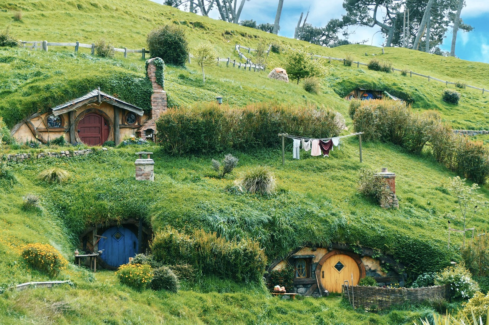

Best Places to Visit
New Zealand is full of amazing places. Here are three top attractions you should not miss:
1. Milford Sound
Milford Sound is a stunning fjord located in Fiordland National Park, on the southwest coast of New Zealand's South Island. It is famous for tall cliffs, waterfalls like Stirling Falls, and wildlife such as dolphins, seals, and penguins. Tourists can take scenic boat cruises or kayak tours to explore the area. The closest town is Te Anau, where visitors can find places to stay and start their journey to Milford Sound.

2. Rotorua
Rotorua is famous for hot springs, geysers, and Māori culture. You can relax in thermal pools and watch traditional performances.

3. Hobbiton
Hobbiton is located in Matamata, in the North Island of New Zealand. It was first built as a film set for the movie "The Lord of the Rings: The Fellowship of the Ring" in 1999. Later, it was used again for "The Hobbit" trilogy. Now, it’s a permanent attraction where visitors can walk around the Shire, see the Hobbit holes, visit the Green Dragon Inn, and enjoy the peaceful countryside. It’s a magical place for fans of the movies and anyone who loves nature and storytelling.
